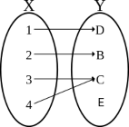
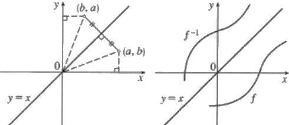

Functions
Definition 1.4.0. A mapping (or a function) f from a set A to a set B is a rule that for each element of A associates a uniquely determined element of B. The set A is called domain of the function f, the set B is the codomain of the function. This is usually written as:
f: A → B
if a ∈ A then the unique element b ∈ B, which corresponds to a is denoted by f(a). We say that b = f(a) is an image of a through f, and a is a preimage or inverse image of b through f.
The function is thus specified by three objects: the rule that establishes the correpondence, its domain, and its codomain. Changing any one of them will change the function, and it will determine wheter a correspondence is a function.
Example 1.4.2. Let X = {1, 2, 3, 4} and Y = {D, B, C, E}. The law f: X → Y defined as f(1) = D, f(2) = B, f(3) = C, f(4) = C is a function. We can represent it with the following diagram
Let f: A → B; The set of all images of all elements a ∈ A is a subset of B called range or image of f which we denote by Im(f) or f(A).
Range f = Im f = f(A) := {b ∈ B | b = f(a) for some a ∈ A} ⊆ B
One can observe that in Example 1.4.1, there are elements in the domain that are associated with the same element of the codomain, e.g. f(3) = C, f(4) = C. This does not contradict the definition of function, because the definition does not state that the different elements of A can't be mapped to a same element of B. This is an additional property that defines injective functions.
Definition 1.4.3 A function f: X → Y is injective (or one-to-one) if, for all x1 and x2 in X, f(x1) = f(x2) implies x1 = x2. We say in this case that f is a one-to-one mapping for X to Y.

Not all the elements of B have to correspond to elements of A, but when it happens then the codomain of a function is also its range, i.e. when Im(f) = B, and the function is said to be onto or surjective.
Definition 1.4.4 A function f: X → Y is surjective (or onto) if, for all y ∈ Y, there exists an x ∈ X such that f(x) = y. Simbolically ∀y ∈ Y, ∃ x ∈ X, f(x) = y. In this case we say that f maps X onto Y and we write Im f = Y.

The function f: ℝ → ℝ defined by f(x) = x2 is not surjective, since the squares of real numbers are all positives. However, the function g: ℝ → ‚Ñù≥0 defined by g(x) = x2 (with the restricted codomain) is surjective, since for every y in the nonnegative real codomain, there is at least one x in the real domain, such that x2 = y.
Definition 1.4.5. Let S and T two subsets of A and B respectively. The inverse image or preimage of a set T ⊆ B under f, is the subset of A defined by
f−1(T) = {a ∈ A| f(a) ∈ T}
other notation include f−1[T].
The inverse image of the dicrect image, for any S ⊂ A,
f−1(f(S)) ⊇ S, equality holds if f is injective. 1.4.1
The direct image of an inverse image, for any T ⊂ B, is
f(f−1((T)) ⊇ T, equality holds if f is surjective. 1.4.2
If f: X → Y is both injective and surhective, then f is said to be injective. If f is bijective, then y = f(x) has a unique solution x ∈ X for each y ∈ Y, and the unique x is denoted by x = f−1 (y). If f is bijective, then Eqns. 1.4.1 and 1.4.2 we have
f−1(f(S)) = S, for any S ‚äÇ X
f(f−1((T)) = T, for any T ‚äÇ Y.
Definition 1.4.6. A function f: X → Y is bijective when each y ∈ Y has one counterimage in X. In this case f is both injective and surjective.
Many authors say there extist a "one to one correspondence" to connete bijection. We avoid this term, since it can be easily confused with a "one to one mapping", that is the alternative name for injective function.
Definition 1.4.7. If f: A → B a bijective function, then is also invertible. That is there exists the function f−1: B → A such that every y ∈ B is mapped to a unique element x ∈ A; we have that:
f−1 (f(x)) = x, ∀x ∈ A; f(f−1 (y)) = y, ∀y ∈ Y;
Assigning the unique inverse image x to each y ∈ Y defines a map f−1 of Y into X, which is called the inverse of f. By definition f(f−1)(b)(b) = b for every b ∈ B and f−1(f(a)) = a for every a ∈ X. For a function to have an inverse, it must be bijective. The inverse function f−1 is unique if exists. For example the function f(x) = x3 of ℝ into ℝ is bijective and f−1(x) = x1/3.
Note. Don't confuse f−1(T) with the inverse function f−1. The inverse function cannot be defined for any function, whereas the pre-image can always be defined.
Example 1.4.8. Let f: X → Y defined as in the example above, and let X1 = {2,4} and B1 = {B,C,E} then f(X1) = {B, C} and f−1(B1) = {2,3,4}.
Example 1.4.9. Consider the function f: ℝ → ℝ defined as f(x) = x2. Note that f({0,1,2}) = {0,1,4} and f−1({0,1,4}) = {−2,−1,0,1,2}. This shows that f−1(f(X)) ≠ X in general, it is only when injective.
Proposition 1.4.10. Consider f: A → B, then
f is injective if and only if X = f−1(f(X)) for all X ⊆ A.
f is surjective if and only if f(f−1(Y)) = Y for all Y ⊆ B.
Graph of a function
A function ca be thought of as a correspondence between sets A and B and in particular as a set of ordered pairs (a,b) where the first element a of the pair belongs to the domain A and the second element b to the codomain B. Thus each correspondence is a subset of the cartesian product A x B.
Definition 1.4.11. The subset F of A x B (i.e. the relation F from A to B) given by
F = {(a, f(a)) | a ∈ A}
is known as the graph of the function.
Note that not every correspondendence can serve as the graph of a function, only a set of ordered pairs in which each element of the domain has only one element associated with it in the range is the graph of a function.
Note also that a function is a (particular) relation, while not every relation is a function. If A = B we will say there is a binary relation between the elements of A.
Graph of f−1
We want to represent the grap of f andf−1 on the same cartesian plane. Since f(a) = b iff f−1(b) = a, the point (a,b) belongs to the graph of f iff (b,a) belongs to the graph of f−1. The point (b,a) is obtained from (a,b) by reflection about the line y = x
Some examples of function and inverse functions are the following
The exponential function x ↦ ax with its inverse, the logarithmic function x ↦ lna x.

The trigonometric functions x ↦ sin x, x ↦ cos x and x ↦ tan x, with the inverses x ↦ arcsin x, x ↦ arccos x and x ↦ arctan x.
The power function x ‚ܶ xn, for n ≥ 1, integer, with its inverse function: x ‚ܶ x1/n.
1.4.12 Examples.
The function f: ℝ → ℝ, defined as f(x) = x2 is not injective (for example f(1) = f(−1) = 1) and not even surjective. The function f:[0, +inf) → ℝ with f(x) = x2 is injective. Also the function h: ℕ → ℕ, defined as h(x) = x2 for each x ∈ ℕ is not surjective since there is no natural number x such that x2 = 2.
The function f: ℝ → ℝ, defined as f(x) = x3, is both injective and surjective since from x1 ≠ x2 follows x13 ≠ x23
The function f: ℝ → ℝ, defined as f(x) = ex, is injective but not surjective since no positive elements is mapped to negative values.
The function f: ℝ → ℝ, defined as f(x) = x3 − x, is surjective but not injective.
The function f: (0, +∞) → ℝ defined as f(x) = ln x, is surjective and injective.
1.4.13 Definition. Let f: A → B a function from A to B. If A1 is a subset of A, the function f implies a law such that for each element of A1 associate an element of B, hence a function from A1 to B. This function is known as restriction of f to A1 and indicated by f|A1. Its image is often time indicated by f(A1) rather than f|A1 (A1) to indicate the image restricted to A1 just to simplify the notation.
1.4.14 Theorem. Let f: A → B a function between finite sets
If f is injective, then |A| ≤ |T|;
If f is surjective, then |A| ≥ |T|;
If |A| = |T|, then f is bijective, iff, f is both injective and surjective.
Well-defined functions
The condition that a function must be well defined means that f has a definition that assigns it a unique value
a = b ⇒ f(a) = f(b)
Example 1.4.15 Let ℚ be the set of rational number. Let
f(x/y) = x + y
for any x/y in ℚ. Does this yield to a well-defined function f: ℚ → ℝ.
Solution. The answer in in the negative. For example not that 2/3 = 4/6, but
f(2/3) = 2 + 3 = 5 ≠ f(4/6) = 4 + 6 = 10
Example 1.4.16 Show that the function f: ℚ → ℚ defined by
f(x / y) = (x + y) / y
is well defined.
Solution. Let a/b = c/d ∈ ℚ. Then
f(a / b) = (a + b)/b
= a / b + b /a
= c / d + c /d
= (c + d)/d
= f(c/d)
so f is well defined. ■
Characteristic funcion
Notation 1.4.16 The writing “BA”, or “Fun(A,B)”, is used to indicate the set {f | f: A → B}, of all functions from A to B. Particularly the symbol 2 indicates the set of two elements {0,1}. So for example 2X denotes the totality of mappings of X into the set {0,1}. □
We are going to define an important class of functions.
Let X be a set, and let ùìü(X) be the power set of X, the set of subsets of X. Given a subset A ∈ P(X), one can ask for each point x ∈ X whether it lies in A or not. This can be expressed by the characteristic function of the subset A.
Definition 1.4.17 Let X be a fixed set. For each subset A of X define a function χA: X → {0, 1} known as characteristic function of the subset A, (or indicator function) by the rule:
so the characteristic function of the subset A, takes every element of A into 1 and every element in the complement of A into 0. The rationale for this is that every subset A of X can be identified with it characteristic function χA.
Example 1.4.18. Let the set X = {1, 2, 3, 4, 5, 6, 7}, and let its subset A = {4, 5, 6}. The characteristic function χA: X → 2 is the following:
1 ↦ 0 2 ↦ 0 3 ↦ 0 3 ↦ 0 4 ↦ 1
5 ↦ 1 6 ↦ 1 7 ↦ 0 ■
Theorem 1.4.19. Let X a set and 2: {0,1}. There exists a bijection among ùìü(X) and the set 2X, set of all functions from X to {0,1} i.e. f: → {0,1}.
Proof. Let A a subset of X. The mapping
θ: ùìü(X) → 2X
maps every element A of ùìü(X) to its characteristic function χA, is bijective. We have to prove both surjectivity and injectivity of χA. We first show that it is one-to-one. Suppose θ(A) = θ(B) where A, B ∈ ùìü(X). We must show A = B. Let x ∈ A. Then θ(A) = χA that is θ(A) is a function from X to 2X. Let x ∈ A then χA(x) = 1, so χB(x) = 1, which means x ∈ B. Thus A ⊂ B (∀x in X we've χA(x) = 1 ⇒ χB(x) = 1, iff A ⊂ B). Similarly B ⊂ A and so A = B. Next to prove that θ is onto, let f ∈ {0,1}X. f defines a unique subset A = f−1{1} of X and it is evidently the characeristic function of the subset A of X. So f = χA = θ(A).□
Property 1.4.18. Let |A| = n and |B| = m, then BA has cardinality mn.
Proof. Every function f: A → B maps an element of A to one and only one element of B; this latter element can be chosen in m possible ways f(ai), ∀i ∈ n, so there are in total m ⋅ m ⋅ ... ⋅ m = mn functions f. □